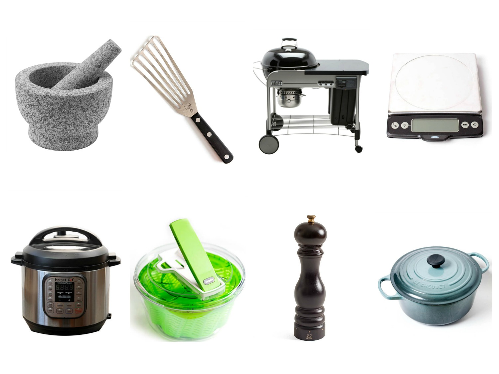

Vocabulary in the Kitchen

Here you can learn kitchen terms you may not have heard before!
A
AL DENTE
Generally used in terms of pasta and rice cooking, but technically includes vegetables and beans too. Al dente is translated as ‘to the tooth’ meaning something cooked but left with a bite of firmness.
AU GRATIN
Sprinkled with breadcrumbs and cheese, or both, and browned.The phrase ‘au gratin’ literally means “by grating” in French, or “with a crust”.
AU JUS
With its own juices from cooking, often refers to steak or other meat.
AU SEC
Description of a liquid which has been reduced until it’s almost nearly dry, a process often used in sauce making.
B
BARDING
To cover a meat with a layer of fat before cooking, it maintains the moisture of the meat while it cooks to avoid overcooking.
BASTE
To pour melted fat or the juices of the liquid over meat or other food while cooking to keep it moist.
BLANCH
A quick method of cooking food, usually green vegetables, whereby the item is basically scalded in boiling hot water for a short period of time and then refreshed in ice cold water. This ensures that the veggie retains its bright green colour and a good firm texture.
BROIL
Normally a term used in the States, broil is what we know as grilling. Basically, you preheat the hot rod or grill at the top of your oven until it gets exceptionally hot. Place the food on an oven tray under the preheated grill until it browns and has some incredible flavour.
BRAISE
Braising is an old French method of cooking meat. It uses a combination of dry and moist heat, dry being when the meat is seared at a high heat and moist when it’s gently cooked in a liquid. This cooking method is ideal with sinewy, tougher cuts of meat.
Brining
The process of soaking meat in a brine, or heavily salted water, before cooking.
BLEND
The process of combining two or more ingredients so that they become smooth and uniform in texture and lose their individual characteristics.
BONE
Ironically, to bone a piece of meat is to remove the bone from it.
BUTTERFLY
Butterflying food refers to splitting it through the centre to thin it out, but not cutting through it entirely.
C
CARTOUCHE
A cartouche refers to a piece of greaseproof or baking paper that is used to create a lid over a pot or saucepan. Usually cut in a circle and placed over a dish with a small amount of liquid. In the instance of poaching it stops steam from escaping, it can also prevent skins from developing on sauces.
CLARIFY
Most often refers to butter, where the milk solids and water are rendered from the butterfat. This is done by gently melting the butter, allowing the two to separate and then skimming off the solids.
CODDLE
To coddle something is to cook it in water just below boiling point. More recently, the term specifically applies to eggs using a device called a coddler. The low cooking temperature produces a much softer egg than if you were to boil it.
CONSOMMÉ
A type of clear liquid that has been clarified by using egg whites and flavoured stock to remove fat.
CORING
To remove the central section of some fruits, seeds and tougher material that is not normally consumed.
CONFIT
Regularly recognised with duck, but can include other meats, where the meat is cooked in its own fat (or other fat if necessary) at a low heat.
CURE
A non-heated method of cooking where the food item is packed with a salt mixture and left so that the moisture draws out.
CURDLE
When egg-based mixtures are cooked too quickly and the protein separates from the liquids, leaving a lumpy mixture behind.
CUT IN
A method of blending, usually for pastry, where a fat is combined with flour. The method often refers to using a pastry blender to mix butter or shortening into the flour until the mixture is the size of peas.
D
DICE
A knife skill cut – the exact measurement changes but the shape is always a small square.
DOLLOP
A small amount of soft food that has been formed into a round-ish shape. Yoghurt, whipped cream and mashed potatoes are all examples of foods that can be dolloped.
DREDGING
To coat moist foods with a dry ingredient before cooking to provide an even coating.
DRESS
Dress has two definitions when it comes to cooking, firstly to coat foods (mostly salad leaves) in a sauce. It also refers to preparing poultry, fish and venison for cooking, which essentially is breaking them down off of their carcasses and sectioning the meat.
DEEP FRY
To cook food in a deep layer of hot oil.
DEGLAZE
To loosen bits of food which stuck on the bottom of a pan by adding liquid such as stock or wine.
E
EFFILER
To remove the ends and the string from green beans.
F
FLAMBÉ
The process of cooking off alcohol that’s been added to a hot pan by creating a burst of flames. The fumes are set alight and the flame goes out when the alcohol has burnt off.
FILLET
Most commonly known as a very tender cut of beef, but can also refer to the meat of chicken and fish.
FLAKE
Refers to the process of gently breaking off small pieces of food, often for combining with other foods. For example, you would flake cooked fish to combine with cooked, mashed potatoes to make fish cakes.
FRENCHING
The process of removing all fat, cartilage, and meat, from rib bones on a roast by cutting between the bones, often referring to lamb, beef, or pork rib.
G
GRILL
Grilling food is applying dry heat to food either from above or below. In South Africa, grilling refers to cooking food under the grill in your oven (in the States this is called broiling) or can also refer to cooking food in a pan with grill lines.
GLAZE
A glaze is a sticky substance coated on top of food. It is usually used in terms of baking or cooking meats where a marinade will be brushed over the food continuously to form a glaze.
GRATIN
A gratin is a topping that is often either breadcrumbs or grated cheese that forms a brown crust when placed under a hot grill.
GREASE
Refers to applying a fat to a roasting tray or cake tin to ensure that food doesn’t stick.
GRIND
To break something down into much smaller pieces, for example coffee beans or whole spices.
H
HULL
Refers to the husk, shell or external covering of a fruit. More specifically, it is the leafy green part of a strawberry.
I
INFUSE
To allow the flavour of an ingredient to soak into a liquid until the liquid takes on the flavour of the ingredient.
J
JACQUARDING
The process of poking holes into the muscle of meat in order to tenderise it, also known as needling.
JUS LIE
Meat juice that has been lightly thickened with either cornflour or any binding thickener.
JULIENNE
Refers to a knife skill cut where the shape resembles matchsticks.
K
KNEAD
To work dough into a soft, uniform and malleable texture by pressing, folding and stretching with the heel of your hand.
L
LARDING
The process of inserting strips of fat into a piece of meat that doesn’t have as much fat, to melt and keep the meat from drying out.
LIAISON
A binding agent of cream and egg yolks used to thicken soups or sauces.
M
MACERATE
The soaking of an ingredient, usually fruit, in a liquid so that it takes on the flavour of the liquid. Can also be used to soften dried fruit.
MARINATE
To impart the flavour of a marinade into food, usually requires some time to allow the flavours to develop. Can also be used to tenderise a cut of meat.
MINCE
To finely divide food into uniform pieces that are smaller than diced or chopped foods.
MISE EN PLACE
The preparation of ingredients, such as dicing onions, chopping veggies or measuring spices, before starting to cook.
N
NAPPE
The act of coating a food with a thin even layer.
NEEDLING
Injecting fat or flavours into an ingredient to enhance its flavour.
O
P
PARCOOKING
The process of not fully cooking food, so that it can be finished or reheated later.
PAUPIETTE
A thin, flattened piece of meat, rolled with a stuffing of ingredients i.e, vegetables, which is then cooked before served.
PANÉ
To coat in breadcrumbs.
PANADE
A mixture of starch and liquid that’s added to ground meat for hamburger patties/meatballs. Usually a mixture of bread, breadcrumbs or panko with milk, buttermilk or yoghurt.
PARBOIL
To boil food only slightly, often used to soften foods like potatoes before roasting them. Helps to speed up the cooking process.
POACH
To cook in gently bubbling liquids such as a stock or a broth.
PURÉE
Cooked food, usually vegetables, that have been mashed or blended to form a paste-like consistency.
PICKLE
The process of preserving food in a brine, which is a salt or vinegar solution.
Q
R
REDUCE
The process of simmering or boiling a liquid, usually a stock or a sauce, to intensify the flavour or to thicken the consistency.
RENDER
Using a low heat to melt the fat away from a food item, usually a piece of meat. This rendered fat can then be used to cook with.
ROAST
Technically defined as a method of dry cooking a piece of meat, where the hot air envelopes the food to cook it evenly and to allow it to caramelise nicely.
ROUX
A roux is a flour and fat mixture cooked together, which acts as a thickener in soups, stews and sauces. (link to mother sauce article)
RECONSTITUTE
To restore a dried food to original consistency, or to change its texture, by letting it soak in warm water.
REFRESH
To halt the cooking process, usually that of vegetables after being blanched, by plunging them into ice cold water.
S
SAUTÉ
Meaning ‘to jump’ in French, sauteeing is cooking food in a minimal amount of oil over a rather high heat.
SCALD
To heat a liquid so it’s right about to reach the boiling point, where small bubbles start to appear around the edges.
STEEP
Similar to infuse, steeping is the process of allowing dried ingredients to soak in a liquid until the liquid has taken on the flavour of the ingredient.
SHALLOW FRY
To cook food in a shallow layer of preheated oil.
SIMMER
Process of cooking in hot liquids kept just below boiling point.
SKIM
To remove a top layer of fat or scum that has developed on the surface of soups, stocks or sauces.
STEAM
Method of cooking food by using steam.
SEAR OR BROWN
A method of cooking food over a high heat until caramelisation forms on the surface. This is often done before braising the food, to give it added flavour and is not usually intended to cook the food all the way through.
SWEAT
This refers to the gentle cooking of vegetables in butter or oil under a lid, so that their natural liquid is released to aid the cooking process. Often vegetables cooked this way will end up looking translucent.
SCORE
Shallow, diagonal cuts made on the surface of meat and vegetables for the purpose of rendering fat, encouraging crispiness and flavour absorption.
T
TEMPER
To temper is the process of adding a small quantity of a hot liquid to a cold liquid in order to warm the cold liquid slightly. This is often be done before adding delicate ingredients to a hot mixture, where their format may be affected. An example of this would be adding eggs to a hot mixture – in order to prevent them curdling or scrambling you would add a little of the hot mix to the eggs and incorporate before adding the eggs into the heated mixture. Another example would be adding a cornflour slurry to a hot mixture; a little of the hot mixture is added to the slurry to temper the temperature before adding the mix back to the main mixture.
TOURNER
To cut and peel ingredients such as parsnips or potatoes into a barrel-like shape. For aesthetic purposes but also to ensure that they cook properly.
TRUSS
To bind the legs and wings of a bird to its body, ensuring it maintains an even shape so that none of the extremities dry out.
U
ULTRA-PASTEURIZATION
The process of heating up milk products to 137 degrees celsius for a few seconds and chilling it down rapidly, resulting in milk that’s 99.9% free from bacteria and extending their shelf-life.
V
VANDYKE
To cut a zig-zag or decorative pattern around fruit or vegetables to create decorative garnishes for food presentation.
VELOUTÉ
A type of savoury sauce in which a light stock, such as chicken or fish, is thickened with a flour that is cooked and then allowed to turn light brown, thickened with a blond roux.
W
WHIP
The process of beating food with a whisk to incorporate air and to increase volume.
WHISK
The process of using a whisk to incorporate air into food or to blend ingredients together smoothly.
X
Y
Z
ZEST
Refers to removing the outer part of citrus (called the zest) either by using a grater, a peeler or a knife.
Source: https://crushmag-online.com/a-z-of-cooking-terms/